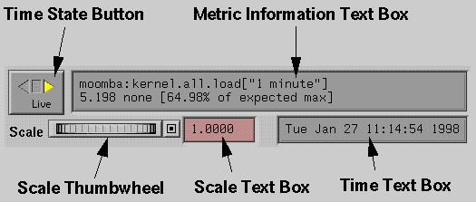

and
that respectively change the mode of the left mouse button mode from
selecting objects in the scene to moving and rotating the whole scene.
and
that respectively change the mode of the left mouse button mode from
selecting objects in the scene to moving and rotating the whole scene.
URL: file:/var/pcp/demos/Tutorial/pmview.html
This chapter of the Performance Co-Pilot Tutorial the 3-D visualization tools that are based on pmview.
For an explanation of Performance Co-Pilot terms and acronyms, consult the PCP glossary.
The most frequently encountered 3-D visualization PCP tools are all based on a common scene constructor and animator, pmview.
The following PCP tools are built on pmview and they are all sh(1) scripts:
| dkvis | visualize disk I/O rates and performance |
| mpvis | visualize cpu utilization/performance |
| nfsvis | visualize performance of NFS statistics |
| nodevis | visualize node statistics on Origin2000 systems |
| osvis | visualize high-level system activity |
| routervis | visualize Craylink router utilization on Origin2000 systems |
| xbowvis | visualize Crossbow (XBow) activity |
mpvis - CPU utilization
One of the most basic resources to be monitored is CPU utilization at the per-CPU level.
This is shown with the mpvis tool.
Starting pmchart from a shell window
$ mpvis -h $pmcd_host
or create a host icon for $pmcd_host and drag-n-drop this onto the mpvis icon in the PerfTools page of the Icon Catalog, or from this page of the Icon Catalog, launch the mpvis icon using Alt-double-click (this will start the pmrun dialog, enter pmcd_host in the text box below Source: and select OK).
In this scene there is one column of blocks per CPU, and within a row the height of the blocks reflects the percentage of time that CPU has spent in user mode (blue), system mode (red), processing interrupts (yellow), waiting for I/O of some sort (aqua) and idle (green).
The pmview display consists of 3 parts:

and
that respectively change the mode of the left mouse button mode from
selecting objects in the scene to moving and rotating the whole scene.
$ dkvis -h $pmcd_host
The How to understand measures of disk performance tutorial document may be helpful if you are having trouble deciphering what the dkvis scene is really displaying.
The Launch option from the menu bar presents a list of tools that can be launched from pmview.
The launched tools inherit the metrics source (and in the case of replay from a PCP archive, the current time). If any objects are selected in the scene, these may be used to further refine the set of metrics displayed by the launched tool.
This navigational drill-down provides additional detail for interesting metrics.
$ osvis -h $pmcd_host
Note that the launched pmchart is independent of osvis, so additional (or related) metrics can be monitored using the pmchart Views and/or Edit menus.
The options in the Launch menu may be customized at the system or user levels. New options can be added to the menu for your favorite tools. Refer to the pmlaunch(1) man page.
For any tool based on pmview, use File -> Record from the menu bar to create a PCP archive that contains all of the metrics for the current pmview scene.
The procedure is very similar to that described for pmchart in the Creating a PCP archive from pmchart section of the pmchart chapter of the PCP tutorial.
The information flow when generating a 3-D performance visualization using pmview is shown below:

So the task of customization to build a new 3-D performance monitor reduces to creating a new front-end shell script.
The scene description language used by pmview is fully described in the man page, but briefly:
Use the -V option to mpvis (or any other PCP 3-D visualization tool) to see the configuration file that will be used. This is a quick way to create "scenes by example", based on the supplied front-end shell scripts.
This chapter is complete, you may return to the Tutorial Contents in the introductory chapter.